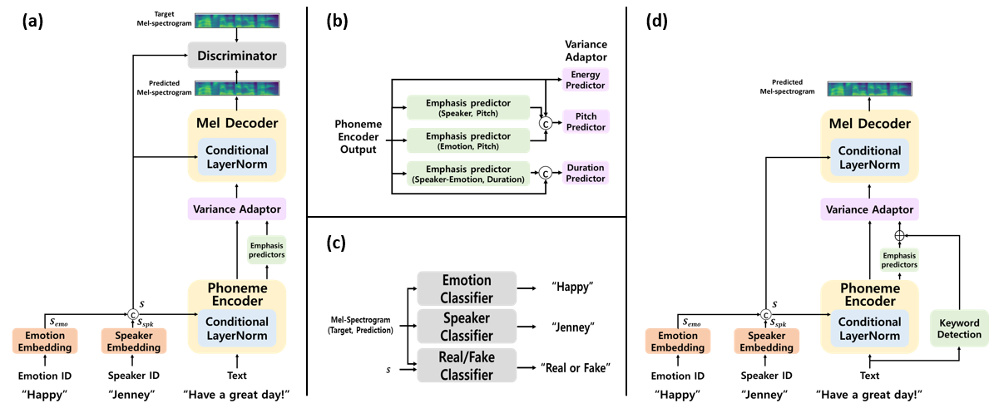

KES-TTS: A Keyword-Aware, Emotion-Driven, and Speaker-Controllable TTS
Kyungseok Oha, Rakbeen Songa, Chulwon Choia,
Bonhwa Kua, Hanseok Kob*
aKorea University, Department of Electrical and Computer Engineering
bCatholic University of America, Department of Electrical Engineering and Computer Science
Abstract
Text-to-Speech (TTS) plays a crucial role in advancing human-computer communication, enabling more natural and effective interactions across various applications. A key requirement for achieving human-like TTS is the ability to generate emotionally expressive and speaker-controllable speech while appropriately emphasizing keywords within a sentence. However, conventional TTS models often fail to capture word-level prosodic variations and lack mechanisms for automatically detecting linguistically and acoustically significant words, resulting in monotonous and less expressive speech. To address these challenges, we propose KES-TTS, which achieves keyword-aware, emotion-driven, and speaker-controllable speech synthesis by integrating automatic keyword detection using KeyBERT, CLN-based style injection, and word-level emphasis control. This enables more natural, expressive, and contextually adaptive prosody. KES-TTS is evaluated on the Emotional Speech Dataset (ESD) and demonstrates significant improvements in speech naturalness, emotional expressiveness, and speaker similarity through both objective and subjective evaluations. Ablation studies and keyword alignment analyses further validate the effectiveness of the proposed emphasis control and keyword detection strategies, confirming that KES-TTS effectively addresses the challenges of multi-speaker, multi-emotion expressive TTS.

(a) illustrates the structure of KES-TTS during the training step, while (b) presents the architecture of the emphasis predictors.
The emphasis predictors consist of three predictors with the same structure, each designed to estimate variations in pitch and duration.
(c) depicts the structure of the discriminator, and (d) shows the structure of KES-TTS during the inference step.
Keyword detection automatically identifies linguistically and acoustically important words from the text input.